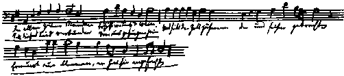

Letters of Frederick Engels
Source: MECW Volume 2, p. 471
Written: 8 October 1839
First published: in part in Die neue Rundschau, 10. Heft, Berlin, 1913, and in full in the book: F. Engels, Schriften der Frühzeit, Berlin, 1920
O Wilhelm, Wilhelm, Wilhelm! So at last we are hearing from you. Now, manikin, now you're going to hear something: I am now an enthusiastic Straussian. Just you come here, I have now got arms, shield and helmet; now I am secure, just you come here and I'll give you such a drubbing, despite all your theologia, that you won’t know where to run. Yes, Guillermo, jacta est alea [the die is cast] I am now a Straussian; I, a poor, miserable poet, have crept under the wing of the genius David Friedrich Strauss. Just hear what a fellow he is! There lie the four gospels in a crisp and colourful chaos; mysticism lies in front of them and adores them — and behold, in comes David Strauss like a young god and brings the chaos out into the light of day and — Adios faith! It is as full of holes as a sponge. He sees too much myth here and there, but only in unimportant matters, otherwise he is a man of real genius. If you can refute Strauss — eh bien, I'll become a pietist once again. — I could also have learned from your letter that Mengs was an important artist, if, unfortunately, I had not already known it for a long time. With Die Zauberflöte (music by Mozart) it is exactly the same. The reading-room is splendidly arranged, and among the most recent literary productions I draw your attention to König Saul, a tragedy by Gutzkow; Shizzenbuch by the same author; Dichtungen by Th. Creizenach (a Jew); Deutschland und die Deutschen by Beurmann; Die Dramatiker der Jetztzeit, Vol. 1, by L. Wienbarg, etc. I am very anxious to hear your opinion about Saul. Beurmann quoted extracts from my article in the Telegraph [214] in his Deutschland und die Deutschen, in which he speaks about Wuppertal. — On the other hand, I warn you against the Geschichte des polnischen Aufstands (1830-31) by Smitt, Berlin, 1839, which was undoubtedly written on the direct order of the King of Prussia [Frederick William III]. The chapter about the beginning of the revolution is headed with a motto from Thucydides which runs something like this: But we, who were unprepared for anything untoward, were suddenly invaded by them without any cause!!!! Oh, what gigantic nonsense! Splendid, on the other hand, is the history of this glorious uprising by Count Soltyk, which was published in German in Stuttgart in 1834 [215] — in your place, of course, it will have been banned, like everything good. Another important piece of news is that I am writing a short story which will be printed in January, always provided, of course, that it is passed by the censor, which is an annoying dilemma.
I really don’t know whether or not I should continue sending you poems, but I think I did send you my Odysseus Redivivus [216] lately and I beg you to let me have your criticisms of the last consignment. We have a novice here from your part of the country, someone called Müller, who is going to sail to the South Seas as a ship’s preacher. He is staying at our house and has the most extravagant views about Christianity, which you will understand when I tell you that he has spent his time recently under the influence of Gossner. It is not easy to have more exalted views about the efficacy of prayer and direct divine intervention in life. Instead of saying that one can sharpen one’s senses, one’s hearing, one’s sight, he says that when the Lord gives me a duty to fulfil, He is also bound to provide me with the power to fulfil it; of course there must be fervent prayer and hard work for one’s own part too, otherwise there is nothing doing. And so he restricts to believers only this familiar fact that holds for all men. Even a Krummacher would have to grant me that such an outlook is really too childlike and childish. — I am very pleased to hear that you have a better opinion of my Telegraph article. It was, of course, written in haste, as a result of which it has a style such as I only hope my short story will have, but also some one-sidednesses and half-truths. Krummacher, as you probably know, got to know Gutzkow in Frankfurt am Main and is said to be making up mirabilia [Curious stories] about it-proof of the correctness of Strauss’ views about myths. I am now taking to the modern style, which is without doubt the ideal of all style. Models for it are Heine’s writings, but especially Kühne and Gutzkow, although Wienbarg is its real master. Among earlier elements that have had a particularly favourable influence on it are Lessing, Goethe, Jean Paul and, above all, Börne. Oh, Börne — he writes a style that surpasses everything. Menzel, der Franzosenfresser is stylistically the best piece of work in German and likewise the first one that sets out to annihilate an author completely; and in your place it is also banned to make sure that no better style shall be written than what is turned out in the royal offices. The modern style unites in itself every excellence of style — compact brevity and pregnancy which hits the mark with a word, alternating with epic, calm description; simple language alternating with shimmering images and brilliant sparks of wit, a Ganymede with the strength of youth, roses twined round his head and in his hand the weapon that slew the python. At the same time, the greatest freedom is left to the author’s individuality, so that despite affinity none imitates the other. Heine writes dazzlingly, Wienbarg with cordial warmth and radiance, Gutzkow with a razor-sharp precision over which there sometimes plays a comforting sunlight. Kühne is pleasantly descriptive with rather too much light and too little shade. Laube imitates Heine and now Goethe as well, but in a wrong manner, for he imitates the Goethean Varnhagen, and Mundt likewise imitates Varnhagen. Marggraff still writes rather too generally and with too much puffing out of his cheeks, but that will pass, and Beck’s prose has not yet got beyond studies. — If you combine Jean Paul’s ornateness with Börne’s precision then you have the essentials of the modern style. Gutzkow has been able to assimilate the brilliant, light but dry style of the French most fortunately. This French style is like a thread of gossamer, the modern German like a wisp of silk (this image has unfortunately gone somewhat awry). My studies of Goethe’s divine songs show that I do not forget the old in my enthusiasm for the new. But one must study them musically and best of all in different musical settings. Here, for example, I reproduce Reichardt’s tune for the Bundeslied.

The first stanza of Goethe’s Bundeslied under the melody of Reichardt’s setting for this song:
“In hours of exaltation
That Love and Wine both bring,
This song with inspiration
United we shall sing!
God binds us all together,
Who come here at His call.
Keep our flames burning ever;
He lit them for us all.”
I have forgotten the bars again; get Heuser to put them in for you. The melody is marvellous and through its always harmonious simplicity it is better suited than any other to the poem. Wonderfully effective is the rise at v. 6 from E by a seventh to D, and the sudden fall at v. 8 from B by a ninth to A. I shall write to Heuser about Leonardo Leo’s Miserere.
In the next few days I shall send you a good friend, Adolf Torstrick, who is going to study there. He is jolly and liberal and understands Greek very well. The other Bremen people who are coming are not up to much. Torstrick will have letters from me to you. Receive him well, I hope you get to like him. Fritz has not yet written to me, the vermicle [An allusion to Gustav Wurm] was going to write to me from Elberfeld but didn’t do so out of laziness-for which please give him a dressing down. If Heuser — whom I cannot write to in Elberfeld for fear I miss him — should arrive, tell him he may hope for something from me soon.
Yours,
Friedrich Engels